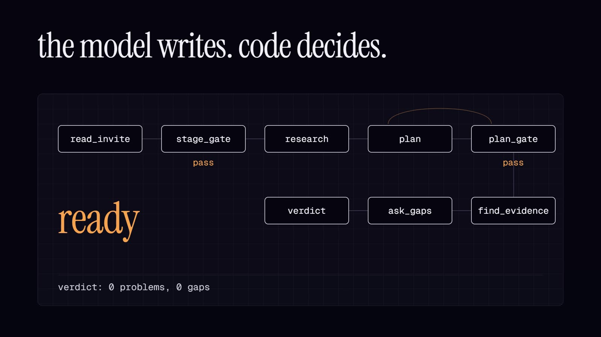

a job agent that never invents
Every line it sends traces to a fact you wrote down.
claude plugin marketplace add comedianhhh/job-agent
- skills for the search
- 10
- jobs-mcp tools
- 4
- job sources scanned
- 5
- eval cases against a baseline
- 26
one posting, start to finish
Five steps, each with what it really prints. Demo persona, example posting.
Five public boards in one schema, no API keys; sites that need your login are read in your own browser. Every posting passes a prompt-injection guard.
| source | read through |
|---|---|
| Greenhouse | the public board endpoint |
| Lever | the public board endpoint |
| Ashby | the public board endpoint |
| SmartRecruiters | the public postings endpoint |
| guest search | |
| Wellfound | your signed-in browser, read-only |
Each requirement gets the facts.md line that covers it, or a gap. Then apply or skip.
| the posting asks | facts.md says |
|---|---|
| backend services in C#, Java or Python | C# / .NET 8, ASP.NET Core |
| production PostgreSQL | append-only event log in PostgreSQL |
| Kafka, Kubernetes (nice to have) | gap |
The draft passes three gates before export: traced numbers, one page, an ATS-readable text layer.
check-trace: 1 file(s), 0 marker(s), 2 untraced number(s)It fills the form from your answers file and stops before Submit. You send it.
full name Jordan Lee
work authorization Canada, no sponsorship needed
resume jordan-lee-backend.pdf
submit waiting for youAn invite starts prep-graph: research, a plan, code checks, questions only where your files are silent.
stage_gate: verified
plan_gate: 1 problem(s)
find_evidence: 3 new gap(s): 3 in facts.md
verdict: READY (0 reason(s))a number with no source never ships
the model’s draft
Improved ingestion throughput by 80% across 12 services.
what ships
Cut update latency from ~15 minutes to under 30 seconds.
facts.md: reduced median … latency from ~15 minutes to under 30 seconds
$ python scripts/check-trace.py --facts facts.md resume-lines.md
UNTRACED resume-lines.md 80% ...Improved ingestion throughput by 80% across 12 services...
UNTRACED resume-lines.md 12 ...Improved ingestion throughput by 80% across 12 services...
check-trace: 1 file(s), 0 marker(s), 2 untraced number(s)the model writes, code decides
A failed check goes back to the model word for word, three tries.
- read_invite
- stage_gate
- research
- plan
- plan_gate
- find_evidence
- ask_gaps
- verdict
runs where your agent runs
- Claude Code
- A plugin: ten skills and jobs-mcp, started through uvx.
- pi
- An npm package; an extension starts jobs-mcp over stdio.
- Any agent that reads SKILL.md
- Copy the skills folder and add jobs-mcp to your MCP config.
install it
claude plugin marketplace add comedianhhh/job-agent
claude plugin install job-agent-skills
Then run /career-init. It writes your facts.md with you.
